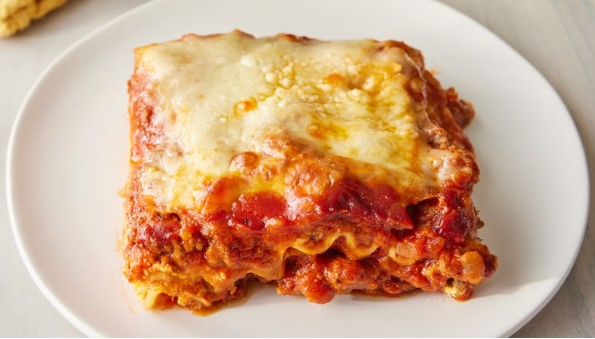

Ingredients:
- 1 pound sweet Italian sausage
- 3 quarters of a pount lean ground beef
- 1 half of minced onion
- 2 cloves garlic crushed
- 28 ounces can crushed tomatoes
- 6 and a half ounces of canned tomato sauce
- 6 ounces of tomato paste
- Half a cup of water
- 2 tablespoons of white sugar
- 4 tablespoons of chopped fresh parsley
- 1 and a half teaspoons of dried basil leaves
- 1 and a half teaspoons of salt to taste
- Half a teaspoon of fennel seeds
- Quarter of a teaspoon of ground black pepper
- 12 Lasagna noodles
- 16 ounces of ricotta cheese
- 3 quarters of a pound of mozzarella cheese sliced
- 3 quarters of a cup grated Parmesan cheese
- 1 egg
Steps:
- Gather all your ingredients
- Cook sausage, ground beef, onion and garlic in an oven over medium heat until well browned
- Stir in crushed tomatoes, tomato sauce, tomato paste and water. Season with sugar, 2 tablespoons
parsley, basil, 1 teaspoon of salt, italian seasoning, fennel seeds and pepper. Simmer,covered
for about 1 and a half hours, stirring occassionally.
- Bring a large pot of lightly salted water to a boil. Cook lasagna noodles in boiling water for
8 to 10 minutes. Drain noodles and rinse with cold water.
- In a mixing bowl, combine ricotta cheese with egg, remaining 2 tablespoons parsley, and half a
teaspoon of salt
- Preheat the oven to 375 degrees F (190 degrees C)
- To assemble, spread 1 and a half cups of meat sauce in the bottom of a 9x13-inch baking dish.
Arrange 6 noodles lengthwise over meat sauce, overlapping slightly. Spread with half of the
Ricotta cheese mixture. Top with a third of the mozzarella cheese slices. Spoon 1 and a half
cups of meat sauce over the mozzarella and sprinkle with a quarter cup of Parmesan cheese.
- Repeat layers and top with remaining mozzarella and Parmesan cheese. Cover with foil: to prevent
sticking, spray foil with cooking spray, oil or make sure the foil does not touch the cheese.
- Bake in preheated oven for 25 minutes. Remove the foil and bake for an additional 25 minutes.
- Rest lasagna for 15 minutes before serving.
